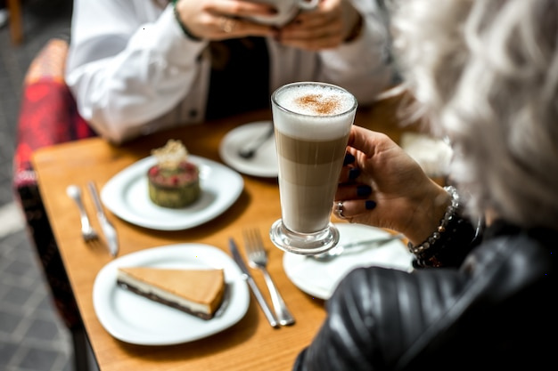

A seasonal coffee menu offers a chance to try drinks and coffees that suit the time of year. At Kindred Grounds, the best place to start is the current menu: seasonal choices can change, so it is worth checking what is available on the day rather than relying on an older description.
If you already know what you enjoy, use that as a guide. Prefer a bold, concentrated drink? Ask which seasonal options are espresso-based. Like a lighter cup? Ask whether there is a filter coffee or another less milk-forward choice. If you are unsure, tell the team whether you usually prefer coffee that tastes smooth, strong, bright or mellow. They can help you find a suitable option from the menu.
Seasonal coffee can refer to more than one thing. A menu might feature a changing coffee bean, a drink inspired by seasonal flavours, or both. If the description is brief, ask what makes that choice seasonal and what to expect from its taste.
Think about whether you want a hot or cold drink, and how much milk you prefer. These details can make a bigger difference to your choice than the name of a drink. If you are considering a new flavour combination, ask whether it is served in a way that keeps the coffee prominent or makes the added flavours more noticeable.
You can also ask about substitutions or adjustments, such as a different milk or a change to the sweetness, if those options are available. For allergy or dietary questions, speak to the team before ordering; ingredients and preparation methods matter, and the menu alone may not answer every question.
When you try something new, take a moment to notice its aroma, texture and balance. With a milk-based drink, consider how the coffee and milk work together. With a black coffee, pay attention to whether its flavour seems delicate, rich or lively. There is no need to identify exact tasting notes—simply noticing what you enjoy can make your next choice easier.
If a seasonal drink is not quite to your taste, ask for a recommendation based on what you would normally order. You can also ask whether the featured coffee is available in another style. Availability may vary, so the team can confirm which options are currently being served.
A useful way to explore Kindred Grounds’ seasonal menu is to choose one unfamiliar option while keeping a familiar drink in mind as a reference. Ask a question, try the coffee, and remember what you liked. That small approach makes a changing menu easier to navigate—and helps you find a drink that suits your own preferences.
This notice is a brief introduction and is not a complete privacy policy. Before collecting personal information, Kindred Grounds should publish a full policy explaining what information is collected, why it is used, how long it is kept, whether it is shared, and how visitors can exercise their rights. Please review the complete policy before submitting personal details. Read the Privacy Policy